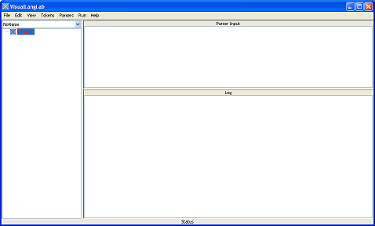
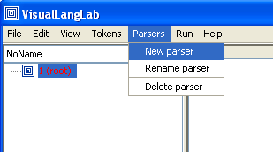
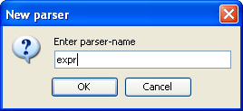
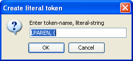
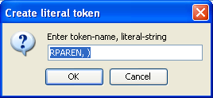
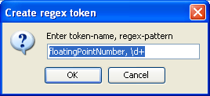
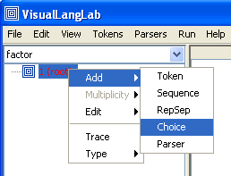
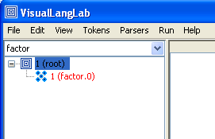
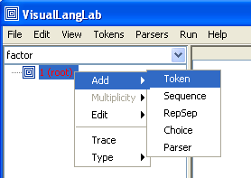
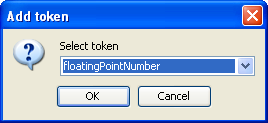

Almost every introduction to parsers uses an example that does arithmetic expressions. So, following the beaten track, here's one that replicates the code on page 644 of Programming in Scala. If you don't have the book, download the relevant part from here. Step-1, obviously, is firing up your new toy ...
> scala -cp VisualLangLab.jar net.java.dev.vll.VisualLangLab
And you will be presented with VisualLangLab's deceptively frugal interface in due course ...
Create the first parser by choosing "Parsers" -> "New parser" from the menu bar. Enter "expr" into the dialog box presented, and press the "OK" button.
 Now (leaving the "expr" parser incomplete) create the next parser "factor". Choose "Parsers" -> "New parser" from the menu bar, enter "factor" into the dialog box, and press "OK". We now have to create the tokens that parser "factor" needs. Choose "Tokens" -> "New literal", enter "LPAREN, (" into the dialog box, and press "OK".
Then create another literal token called "RPAREN" for ")"...
Now create a token for "floatingPointNumber". Choose "Tokens" -> "New regex" from the menu bar, and enter "floatingPointNumber, \d+" into the dialog box. ("\d+" does not really represent a floting point number, but the approximation will suffice for this example)
Having created the three required tokens, we now return to the parser we were creating - "factor". Right-click factor's root node, and choose Choice" from the context menu...
The tree display for "factor" should now look like this...
Right-click factor's root node, and choose "Add" -> "Token" from the context menu...
Then select "floatingPointNumber" from the combo-box in the dialog...
